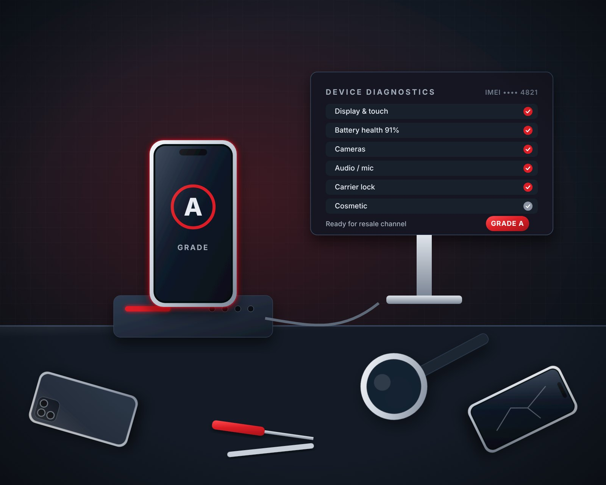

Turn returned assets into recovered value.
Intelegistics designs, launches, and scales reverse supply-chain and circularity programs for returns, trade-ins, excess inventory, refurbishment, and end-of-life equipment, so less margin slips away on the way back.
- Operating since 2002
- United States, United Kingdom, Middle East, and Asia
- Hands-on, not hands-off
The reverse side of the supply chain is where margin quietly disappears.
Much of that leakage never shows up clearly on the P&L. It builds up in four places.
Handling costs accumulate
Every extra touch, transfer, and re-sort adds cost long before a unit is resold.
Recoverable units get downgraded
Units that could sell as refurbished end up graded as parts or scrap.
Inventory sits too long
Devices lose value every week they wait to be triaged, processed, and sold.
Valuable channels go unused
Wholesale, export, and secondary-market buyers who would pay more are never reached.
We help companies see where value is created, delayed, or lost across the product lifecycle, then build practical programs that perform under real operating volume.
Circularity is where recovered value comes from.
Reducing, reusing, repairing, refurbishing, and recycling.
Every loop a device makes is another chance to recover value. We design circular programs that keep products in use longer and still perform under real operating volume.
- ReduceFewer touches, fewer write-downs, and less waste from the start.
- ReuseRedeploy or resell working devices at the highest grade they’ll carry.
- RepairFix what’s fixable so units go back to market, not the parts bin.
- RefurbishRestore devices to a grade buyers trust and pay for.
- RecycleHarvest parts and recycle responsibly when a device’s selling life is done.
Advisory depth. Operating hands.
Five ways we help you recover more value, from the first assessment to the last buyer.
Program Design
Reverse logistics, trade-in, and refurbishment programs designed around your products, volumes, and channels.
Learn moreOperational Assessment
A clear look at how product flows today, with workflow design and process improvement that target where cost and value leak.
Learn moreChannel Strategy
Business development and channel strategy that puts recovered product in front of the right buyers.
Learn moreSecondary-Market Sales
Wholesale, export, and secondary-market sales strategy that turns recovered inventory into revenue.
Learn morePartner Sourcing
3PL, processing, technology, and downstream partners, sourced and connected into one working program.
Learn moreFrom returned asset to recovered value
Every program we build follows the asset. Each step is designed to protect value and keep units moving.
Return & intake
Returns, trade-ins, and excess stock are received and logged with a clear status.
Triage & grading
Units are tested and graded quickly and consistently, so none are downgraded by default.
Data & refurbishment
Data is securely cleared, and units are repaired or refurbished where it pays.
Channel routing
Each unit goes to its best outlet: resale, wholesale, export, parts, or recycling.
Recovered value
Faster cycle times and better grades become margin you can actually see.

photos/home-who-we-work-with.jpgBuilt for companies whose product comes back.
We support device traders, ITAD operators, technology providers, and circular-economy businesses across the United States, United Kingdom, Middle East, and Asia, from business development and market expansion to hands-on implementation.
- Device traders and wholesalers moving recovered inventory
- ITAD operators handling retired and end-of-life equipment
- Technology providers building trade-in and lifecycle programs
- Circular-economy businesses scaling refurbishment and resale
- International companies setting up U.S. operations

photos/home-hands-on.jpgBuilt from operating experience, not observation.
Our model is hands-on: designing, launching, and scaling reverse supply-chain programs from the ground up. We don’t just recommend what a program should look like.
- We help build the process
- We connect the right partners
- We solve the operational constraints
- We create a path from returned asset to recovered value
Working with companies building the circular economy
Supporting go-to-market strategy, U.S. operations setup, device processing, 3PL execution, technology integration, and buyer development.
- MCE SystemsCurrent engagement
- Mercantile PacificCurrent engagement
- Zone GlobalNewest engagement
Let’s find where your value is leaking.
If you manage returns, trade-ins, excess inventory, refurbishment, or end-of-life equipment, a short conversation is the fastest way to see what’s possible.
- Lower handling cost per unit
- Fewer units downgraded
- Faster time to resale
- More channels, better prices